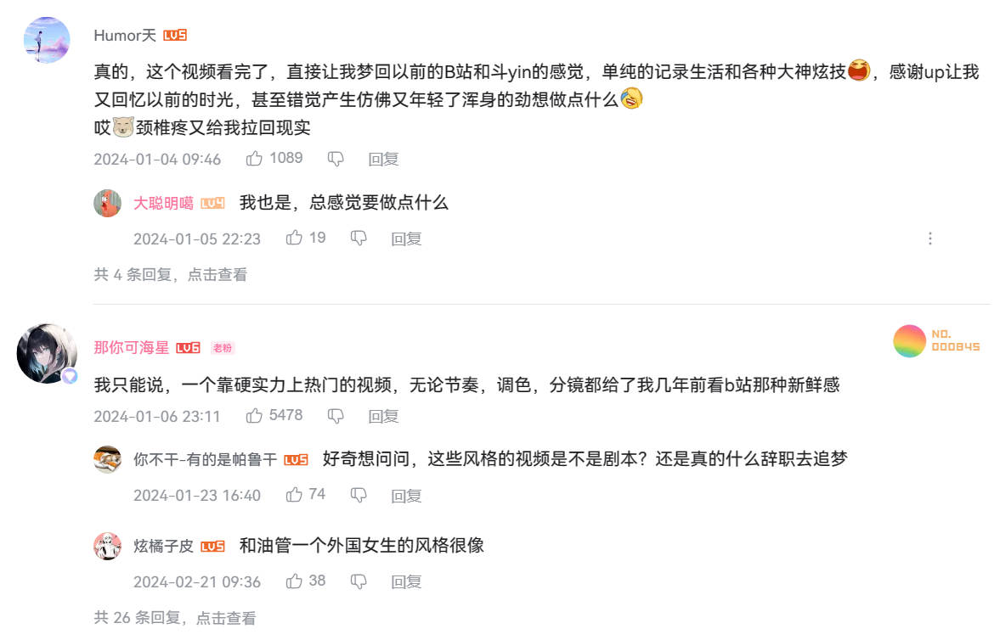

生活本玄*
Table of Contents
本来起名玄学世界 -> 世界本玄，不如中文正统的宇宙博通，上下四方为宇古往今来为宙，叫宇宙本玄多帅。 不过，最后想想（为了配合另一部分：），平平淡淡不如生活
生活
阿猪米德 改变生活
入坑： 他们以为我疯了 其实我成为了白日梦想家
评价：评论已经把我想说的表达出来了——今来看到最好的自媒体

看得出来，他开始为自己剪视频了1
也喜欢： 【我又一次到达了那个港口，不过这一次…】
运动和拼搏对照拍摄很好，想一种踏踏实实的旅行
整体上，并不是（我认为）电影感，而是非常把控的风格，入坑去年就看到了当时可能认为太理想了～结果又重看一遍真棒
哈鲁Ultimate 少年英气
【高考失利后，我一个人划着皮划艇远离了海岸线，直到….】 目前就这个视频，应该和前面几乎同一个风格。 但是，充满了少年气息，单人完成？反正非常有调性，故事讲得清晰，脚本真好啊（我现在想剪视频完全没骨架故事） 很有活力，具有一种能量，相比上面的就显得平淡，有种工作之后落入凡尘蒙灰滤镜。 对了色调上，不想上面强烈调色风格，简直快变成偏色的调色板，这个还是自然一些，不过善于利用服装颜色突出主题。
都会用画外音、人声强烈的音乐、一两句非常合适的人生小道理2
停在港口的船是最安全的，但这不是造船的意义 ——5:38/14:48
其实上面两人的外貌我不是特别喜欢呢
超越
按顺序我今年的几个新关注
-凝心雪
目测命理师，女性很硬地讲第一个看到。喜欢直率举例，因为看到一些象法就顺着理解一下。开始因为
入坑： 【命理公开课｜十神与底层规律、社会形态，全民一起学！《人本命理》进阶版十神逻辑】
就好奇“大一统”理论，之后顺带理解八字十神，当是理解课（六爻哈哈）外知识。
然后顺着看她如何解读社会现象。
归心姓名与易学研究院
入坑： 第30课——名字与命理（9）：八字入门（4）——八字命理学流派差异（禄命派、旺衰派、格局派、盲派）【取名观止——六维合象起名法】（专为中国人打造的免费姓名学教程 ——简介：讲了八字流派发展基本概念的来龙去脉，非常系统清晰，对于不足缺陷的分析一针见血，还能学历史。
在看： 第28课——名字与命理（7）：八字入门（2）——十神/天干合化/藏干的底层逻辑 真的像科学论文一样分析，完美适合我的基础和知识
对UP主感受：将内容非常系统，有条理有思路，感受到它具有宏观的理解，同时在微观上讲述文稿非常清晰，内容是玄学但完全到达科学研究的水平，或许这才把玄学易学本来的精髓发扬出来，也正是了解到它们的完整性才能更好认识它们效用。使用合成语音也合适匀速平衡，不过真人讲最完美。
对了他还提出要对八字做新时代的革新，上一次看到类似的是八卦变九卦（笑）但这一次我是真的相信。